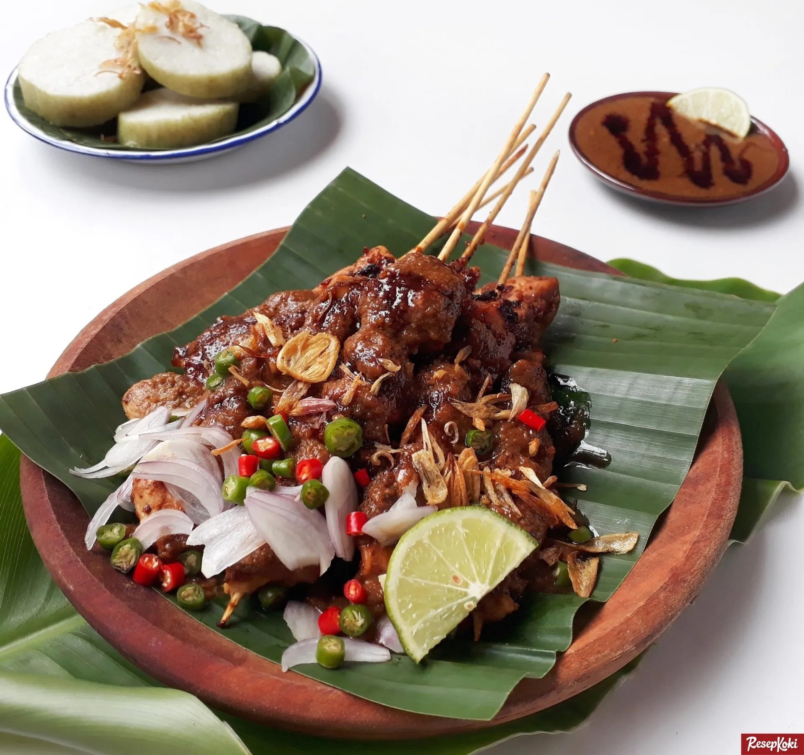
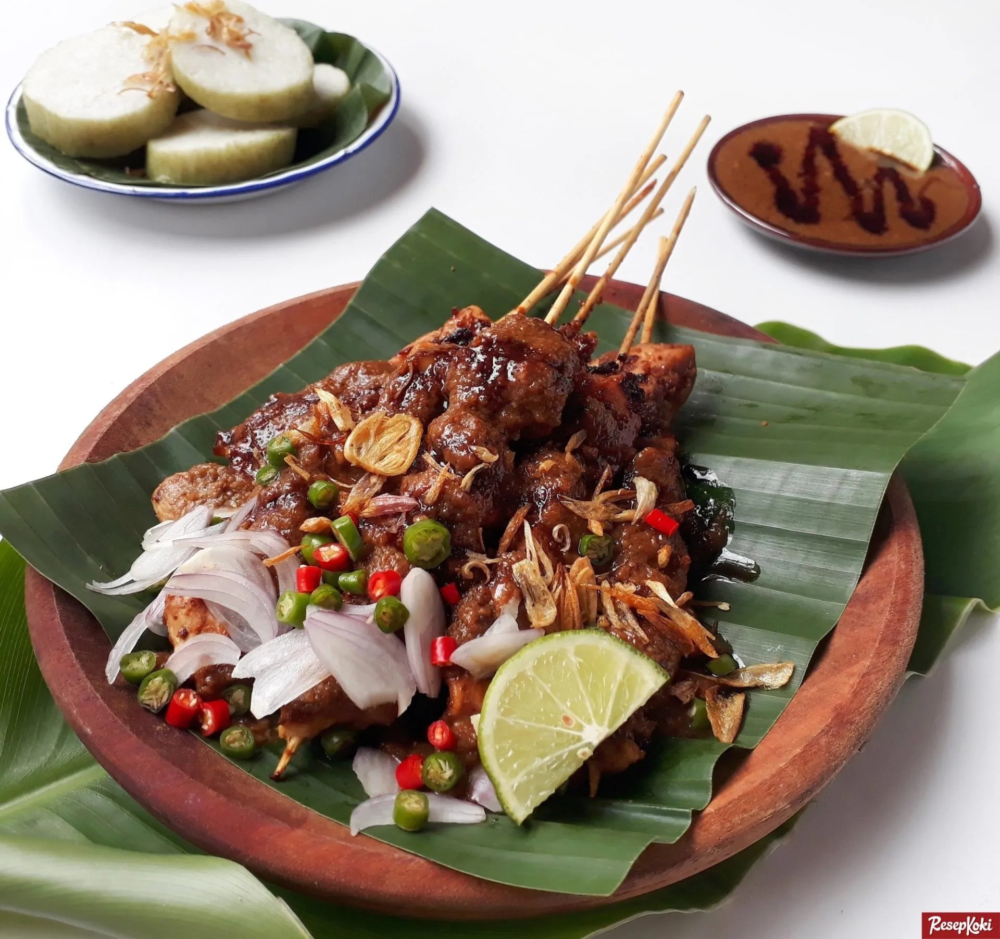
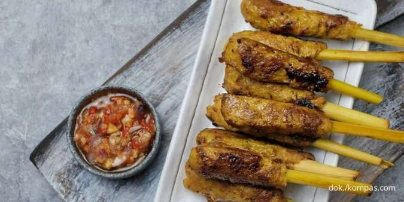
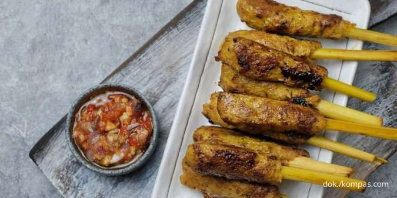

Kenali Kelezatan 4 Jenis Sate Khas Nusantara
Sate adalah salah satu kekayaan kuliner Indonesia yang paling dicintai. Di setiap daerah, sate hadir dengan cita rasa dan karakteristiknya yang unik. Mari kita selami kelezatan empat jenis sate populer yang wajib Anda coba!
1. Sate Madura: Si Legit Gurih yang Paling Populer
 


Siapa tak kenal Sate Madura? Varian sate dari Jawa Timur ini seolah-olah tak terpisahkan dari khasanah kuliner Indonesia. Sate Madura memiliki rasa khas yang legit karena menggunakan bumbu kacang dengan racikan rempah, kecap manis, gula merah, dan bumbu dapur lainnya. Dagingnya yang lembut dan dibakar sempurna menjadi daya tarik tersendiri. Ditambah taburan bawang merah iris dan irisan cabai, Sate Madura siap memanjakan lidah Anda.
2. Sate Padang: Aroma Rempah Kuat yang Menggugah Selera
Siapkan lidah Anda untuk petualangan rasa dengan Sate Padang dari Sumatera Barat. Sate ini menawarkan sensasi berbeda dengan bumbu rempah-rempah yang lebih kuat. Dagingnya direndam dalam rempah-rempah pilihan sebelum dibakar. Keunikannya terletak pada kuah kuning-kecoklatan kental yang menyiram butiran potongan daging bakar. Bumbu yang terbuat dari beras, rempah kunyit, jahe, ketumbar, dan bumbu lainnya disajikan panas, Sate Padang siap memberikan kehangatan dan tantangan rempah di setiap suapannya.
3. Sate Maranggi: Manis Gurih Meresap Tanpa Siraman Saus
Lupakan saus! Sate Maranggi dari Purwakarta, Jawa Barat, menawarkan pengalaman berbeda. Keistimewaannya ada pada bumbu marinasi yang meresap sempurna hingga ke serat daging sapi atau kambing. Dagingnya direndam dalam racikan kecap manis, jahe, lengkuas, ketumbar, dan rempah-rempah lainnya yang khas, menciptakan rasa yang manis, gurih, dan lezat yang tidak memerlukan siraman saus tambahan. Cukup dinikmati bersama tomat segar andalannya untuk ledakan rasa yang otentik dan otentik.
4. Sate Lilit: Cita Rasa Khas Pulau Dewata

 

Sate Lilit adalah representasi cita rasa unik Pulau Dewata. Sate ini tampil beda, bukan potongan daging, melainkan daging cincang (sapi/ayam/ikan) yang dicampur dengan parutan kelapa, santan, dan bumbu khas Bali (basa genep). Adonan gurih ini kemudian dililitkan pada batang serai atau bambu, seringkali menggantikan batang serai sebagai penusuk. Dibakar dengan arang sampai matang, Sate Lilit punya cita rasa yang khas, dengan perpaduan rempah yang manis, gurih, dan sedikit pedas.